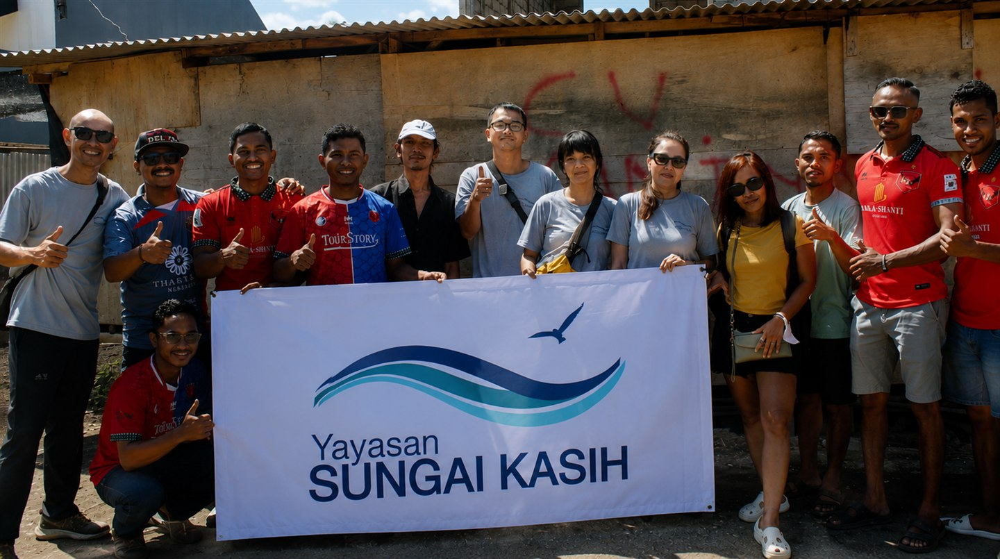
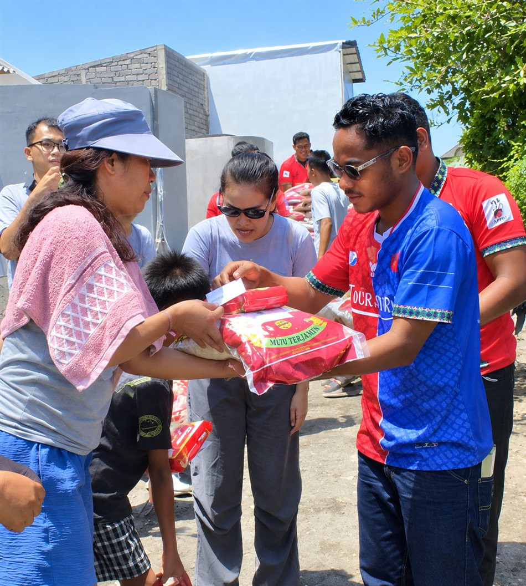
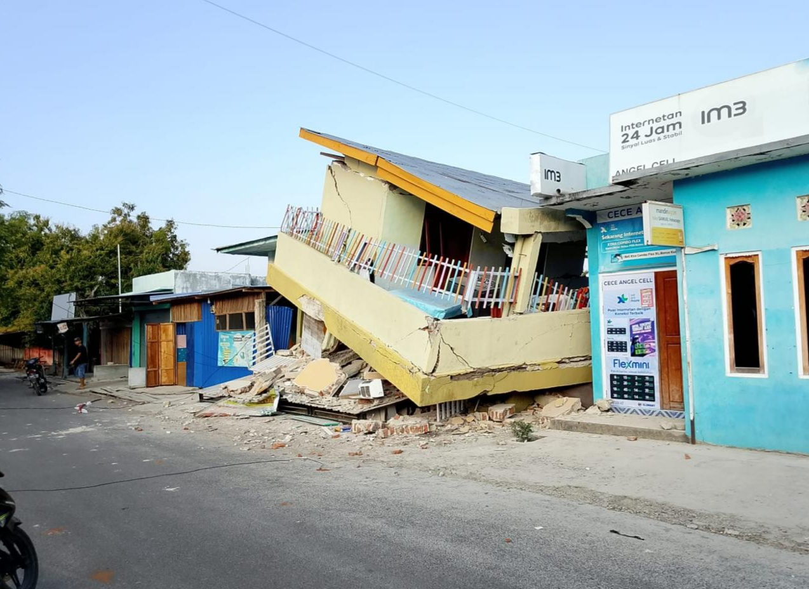
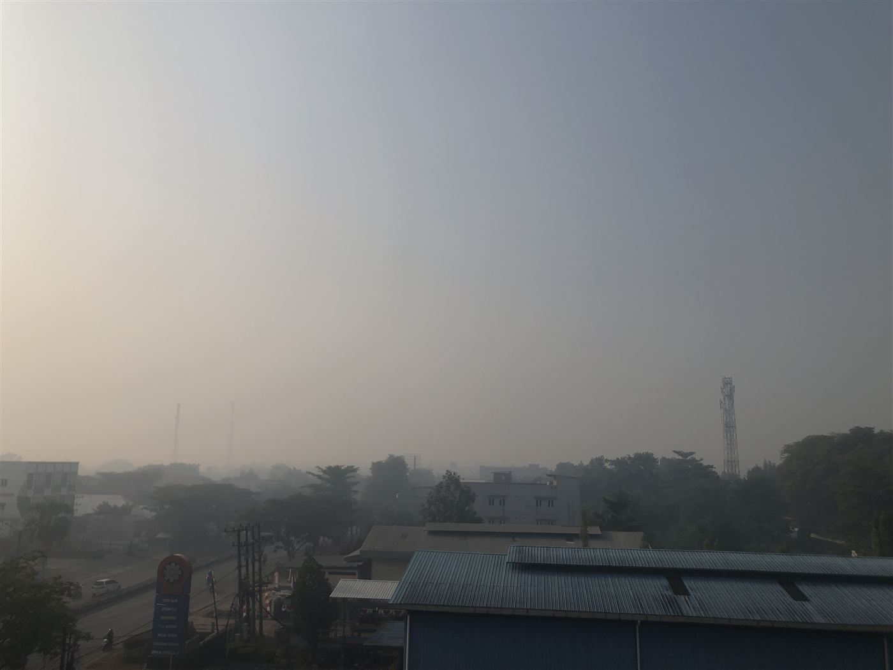

Rumah Kasih
Tempat anak-anak belajar dan dibentuk karakternya. Pendidikan gratis yang berjalan dengan kasih, disiplin, dan harapan, menumbuhkan rasa hormat, semangat belajar, dan iman.
Kenali pelayananYayasan Sungai Kasih hadir mendampingi anak, keluarga, dan komunitas Indonesia melalui pendidikan, kesehatan, pelayanan sosial, serta respons bencana yang bergerak cepat ke titik yang paling membutuhkan.


Yayasan Sungai Kasih adalah rumah bagi pelayanan yang memulihkan martabat dan membuka kesempatan. Kami bekerja bersama anak-anak, orang tua, guru, dan warga agar setiap komunitas dapat bertumbuh dengan kuat.
Perjalanan ini dimulai pada 2010, saat Yayasan Sungai Kasih pertama kali hadir melayani anak-anak dan keluarga yang membutuhkan. Sejak itu, kasih membawa kami ke berbagai tempat, dari ruang belajar sederhana hingga wilayah yang membutuhkan pertolongan segera saat bencana datang.
Yayasan Sungai Kasih pertama kali hadir untuk melayani anak-anak dan keluarga yang membutuhkan.
Rumah Kasih dan Rumah Ceria menjadi ruang aman untuk belajar, bertumbuh, dan menemukan potensi setiap anak.
Kami bermimpi menghadirkan 500 Rumah Ceria di seluruh wilayah Indonesia, menjangkau lebih banyak anak.
Pelayanan kami dirancang bersama komunitas, menyentuh kebutuhan hari ini dan menyiapkan masa depan anak-anak Indonesia.
Tempat anak-anak belajar dan dibentuk karakternya. Pendidikan gratis yang berjalan dengan kasih, disiplin, dan harapan, menumbuhkan rasa hormat, semangat belajar, dan iman.
Kenali pelayananBimbingan belajar dan Hari Ceria yang dijalankan di rumah warga, realisasi visi "jemput bola" sejak 2017. Anak-anak menemukan kegembiraan belajar, perhatian, dan keberanian untuk bermimpi.
Kenali pelayananHari bimbingan belajar mengikuti kurikulum sekolah setiap minggu
Hari Ceria: pembentukan karakter, kasih, dan rasa hormat kepada orang tua
Seluruh layanan pendidikan diberikan tanpa dipungut biaya apapun
Rumah Ceria yang kami cita-citakan hadir di seluruh Indonesia
Kabar terbaru dari lapangan, kami perbarui setiap ada perkembangan.

Yayasan Sungai Kasih mengadakan pelayanan Misi Kemanusiaan ke Flores, NTT untuk membantu saudara-saudara korban gempa bumi berkekuatan 7,7 SR. Tim mulai turun ke lapangan sejak Selasa, 25 Agustus, menyusuri Manggarai Barat, Manggarai, dan Manggarai Timur, hingga total 7 kabupaten terdampak: Manggarai Barat, Manggarai, Manggarai Timur, Ngada, Nagekeo, Ende, dan Sikka, dengan membawa sembako, biskuit & susu bayi, tenda, terpal, serta obat-obatan.

Situasi kabut asap yang semakin pekat di Kalimantan Barat mendorong Yayasan Sungai Kasih membagikan masker, vitamin, dan susu beruang kepada 2.000 anak, orang tua, dan seluruh guru Rumah Kasih & Rumah Ceria di Pontianak dan Singkawang.
Kami mengukur pelayanan bukan hanya dari jumlah, tetapi dari anak yang kembali percaya diri, keluarga yang kembali kuat, dan komunitas yang saling menjaga.
Melayani anak, keluarga & komunitas Indonesia sejak 2010
Pontianak & Singkawang menjadi rumah bagi Rumah Kasih dan Rumah Ceria
Menerima paket sekolah gratis pada tahun 2026
Anak, orang tua & guru terbantu lewat program Peduli Kabut Asap
Didampingi dalam misi kemanusiaan Peduli Gempa Flores, NTT
Menerima bantuan logistik pascabanjir Bali, September 2025
Target jangkauan pelayanan kami di seluruh wilayah Indonesia
Seluruh layanan pendidikan diberikan tanpa dipungut biaya apapun
Momen asli dari kegiatan Rumah Kasih, Rumah Ceria, dan misi kemanusiaan kami. Tekan foto untuk melihat postingan lengkapnya di Instagram.
Ingin menjadi donatur, relawan, mitra pelayanan, atau sekadar bertanya lebih jauh? Sekretariat kami dengan senang hati mendengarkan.
Ceritakan bagaimana Anda ingin berjalan bersama kami.